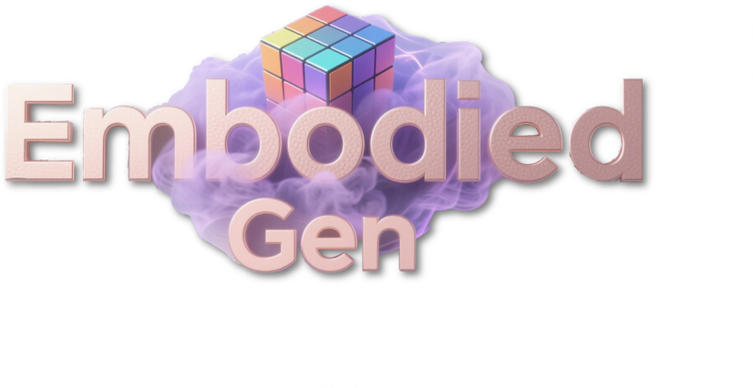
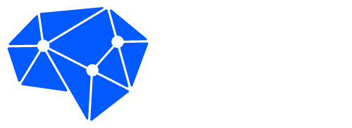
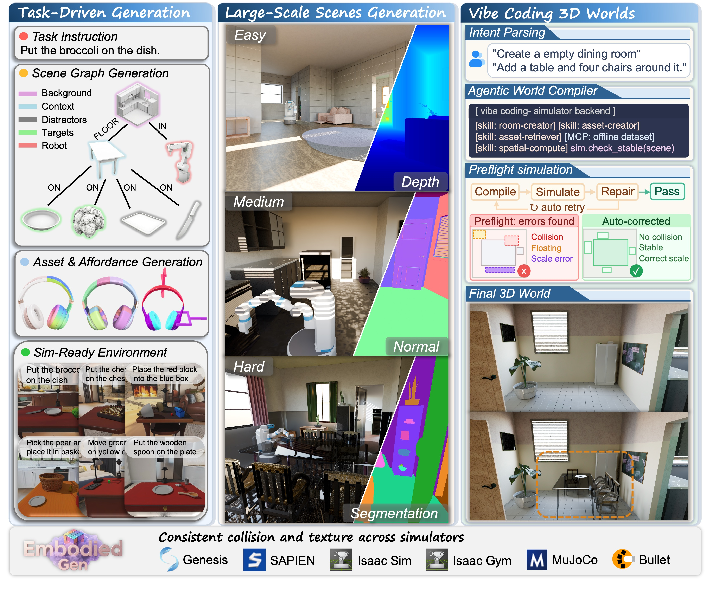
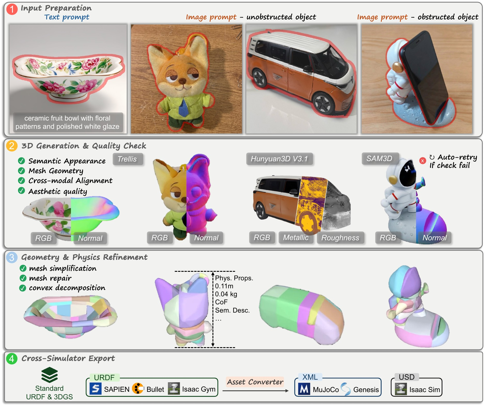
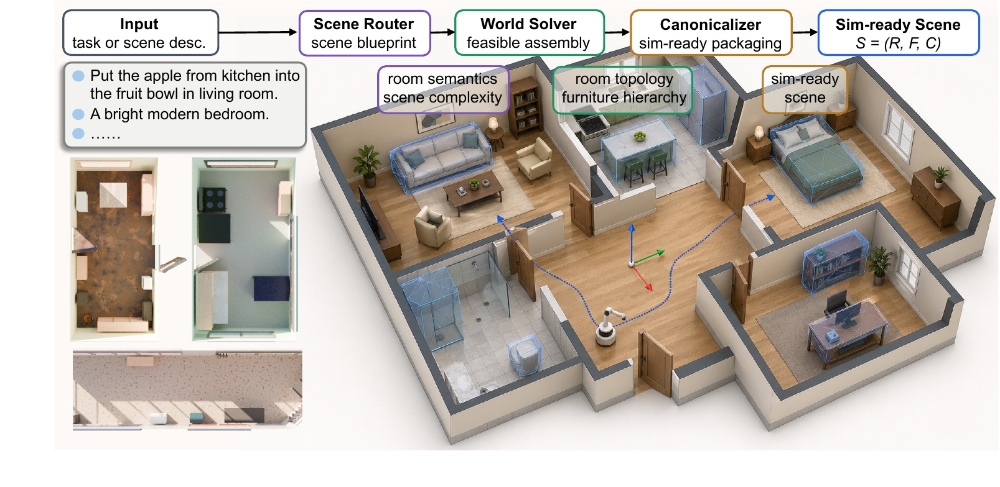
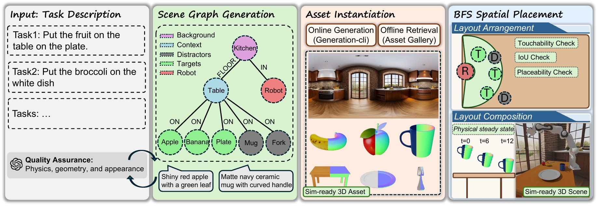
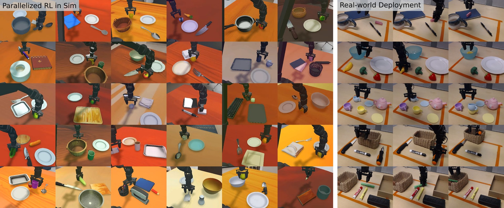

EmbodiedGenV2
An Agentic, Simulation-Ready 3D World Engine
for Embodied AI
From intent to executable 3D worlds
1Horizon Robotics · 2WuwenAI
 Paper
Paper Code
Code Video
Video HuggingFace
HuggingFaceGenerative simulation infrastructure for embodied AI
From text, images, and natural-language dialogue to simulation-ready 3D worlds — assets, interactive scenes, and large-scale environments, deployable across every major simulator.
Generate Sim-Ready Assets
Metric geometry, collision proxies, and physical properties in one package.
↓Scale Large-Scale Scenes
Multi-room, navigable environments with editable furniture instances.
↓Compose Task-Driven Worlds
Natural-language tasks become physically stable, simulator-ready layouts.
↓Edit Vibe Coding
Refine a deployable world state through natural-language dialogue.
↓Export Cross-Simulator
One standardized layout, six engines, zero manual adaptation.
↓Train Closed-Loop Learning
Generated environments as online RL worlds for robot policies.
↓View the system overview figure

Sim-Ready 3D Assets
Real generated assets — drag to rotate. Each carries metric geometry, a collision proxy, physical properties, and cross-simulator interfaces.
Pipeline text or a single image → a sim-ready asset
- 01
Input Preparation
Text → image, or segment the foreground — even under occlusion.
- 02
3D Generation & QC
Pluggable image-to-3D, gated by semantic, geometric & aesthetic checks.
↻ auto-retry - 03
Geometry & Texture
Mesh repair, simplification, convex decomposition, baked texture.
- 04
Physical Recovery
A VLM infers real-world scale, mass and friction for metric rescaling.
- 05
Cross-Format Export
One URDF intermediate → URDF · USD · MJCF for every major engine.
View the full pipeline figure

Beyond rigid bodies — soft-body simulation
The same generate-and-export path reaches soft bodies: 12 text-conditioned garments deploy as deformable meshes in Genesis, with no manual preparation.
12 generated garments · per-vertex displacement · Genesis
Large-Scale Scenes
Beyond tabletops — multi-room, navigable, instance-editable houses, generated as sim-ready backgrounds at a controllable complexity tier.
View the large-scale generation pipeline

Task-Driven Worlds
From a natural-language task, EmbodiedGen parses a Scene Graph and composes a physically stable, directly loadable layout — then settles it under gravity in simulation.
View the scene-generation pipeline

Vibe Coding for Sim-Ready 3D Worlds
Build and edit worlds through natural-language dialogue. Each instruction is a bounded, physics-validated skill call that preserves a deployable, sim-ready world state — add, remove, replace, refine.
One World, Every Simulator
One standardized layout — no manual adaptation. The same generated scene loads with consistent geometry, collision, textures, and physical metadata across six mainstream physics simulators.
Closed-Loop Robot Learning
Generated worlds are not just viewable — they are online training environments. Policies trained purely in EmbodiedGen-generated worlds transfer to real robots.
Results from a companion sim-to-real RL study; policies trained in EmbodiedGen-generated worlds.
View the policy-learning & deployment figure

BibTeX
@misc{wang2025embodiedgengenerative3dworld,
title = {EmbodiedGen: Towards a Generative 3D World Engine for Embodied Intelligence},
author = {Xinjie Wang and Liu Liu and Yu Cao and Ruiqi Wu and Wenkang Qin and Dehui Wang and Wei Sui and Zhizhong Su},
year = {2025},
eprint = {2506.10600},
archivePrefix = {arXiv},
primaryClass = {cs.RO},
url = {https://arxiv.org/abs/2506.10600}
}
@misc{wang2025embodiedgengenerative3dworld,
title = {EmbodiedGen: Towards a Generative 3D World Engine for
Embodied Intelligence},
author = {Xinjie Wang and Liu Liu and Yu Cao and Ruiqi Wu and Wenkang Qin and Dehui Wang and Wei Sui and Zhizhong Su},
year = {2025},
eprint = {2506.10600},
archivePrefix = {arXiv},
primaryClass = {cs.RO},
url = {https://arxiv.org/abs/2506.10600}
}